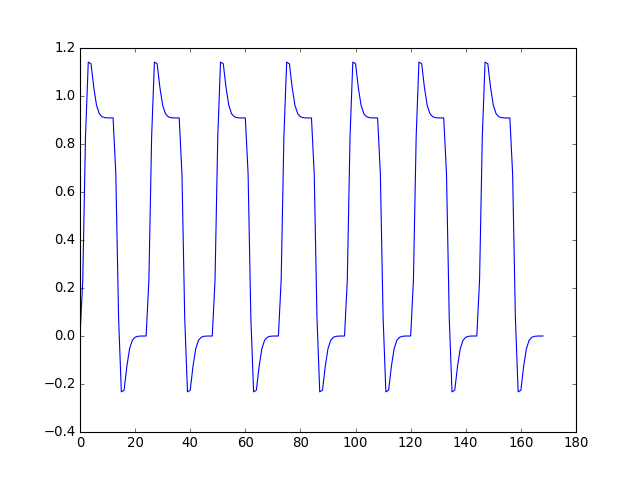
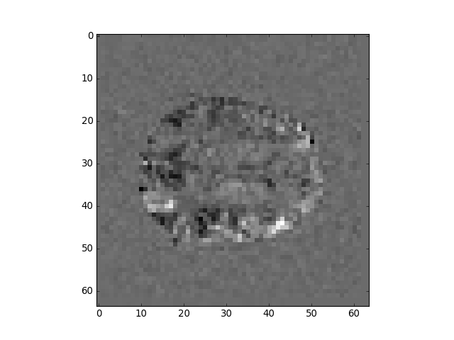
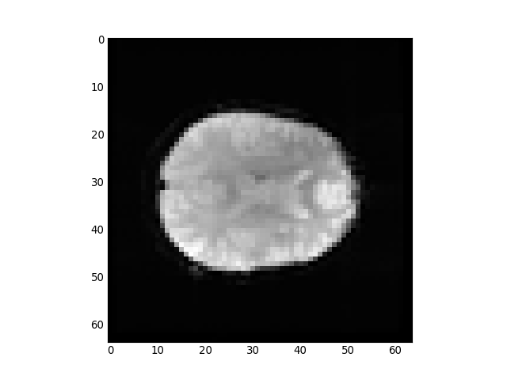

Basic linear modeling¶
In this exercise we will run a simple regression on all voxels in a 4D FMRI image.
>>> # import some standard librares
>>> import numpy as np
>>> import numpy.linalg as npl
>>> import matplotlib.pyplot as plt
>>> import nibabel as nib
>>> # Load the image as an image object
>>> img = nib.load('ds114_sub009_t2r1.nii')
>>> # Load the image data as an array
>>> # Drop the first 4 3D volumes from the array
>>> # (We already saw that these were abnormal)
>>> data = img.get_data()[..., 4:]
>>> # Load the pre-written convolved time course
>>> # Knock off the first four elements
>>> convolved = np.loadtxt('ds114_sub009_t2r1_conv.txt')[4:]
>>> plt.plot(convolved)
[...]

>>> # Compile the design matrix
>>> # First column is convolved regressor
>>> # Second column all ones
>>> design = np.ones((len(convolved), 2))
>>> design[:, 0] = convolved
>>> plt.imshow(design, aspect=0.1, interpolation='nearest', cmap='gray')
<...>

>>> # Reshape the 4D data to voxel by time 2D
>>> # Transpose to give time by voxel 2D
>>> # Calculate the pseudoinverse of the design
>>> # Apply to time by voxel array to get betas
>>> data_2d = np.reshape(data, (-1, data.shape[-1]))
>>> betas = npl.pinv(design).dot(data_2d.T)
>>> betas.shape
(2, 122880)
>>> # Tranpose betas to give voxels by 2 array
>>> # Reshape into 4D array, with same 3D shape as original data,
>>> # last dimension length 2
>>> betas_4d = np.reshape(betas.T, img.shape[:-1] + (-1,))
>>> # Show the middle slice from the first beta volume
>>> plt.imshow(betas_4d[:, :, 14, 0], interpolation='nearest', cmap='gray')
<...>

>>> # Show the middle slice from the second beta volume
>>> plt.imshow(betas_4d[:, :, 14, 1], interpolation='nearest', cmap='gray')
<...>


{kind=link}
{kind=link}
{kind=link}
{kind=link}
{kind=link}
{kind=link}
{kind=link}
{kind=link}